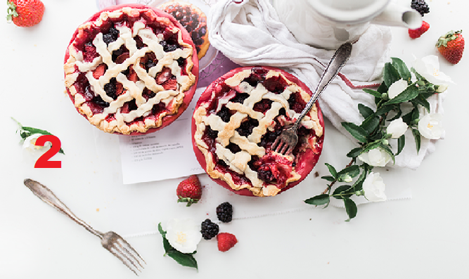

<section class="hero">
    <div class="hero__row">
        <div class="hero__content">
            <div class="hero__content-logo">
                
            </div>
            <div class="hero__content-title">
                Bananas Foster Ice Cream Cake
            </div>
            <div class="hero__content-text">
                If you're looking for decadence, look no further — you've found the Holy Grail of desserts. Honestly, this cake makes us wonder why Bananas Foster hasn't always been served on top of ice cream cake.
            </div>
            <button class="hero__content-btn">
                Get it recipe
            </button>
        </div>
        <div class="hero__slider">
            <div class="hero__slider-images">
                
                
                
                
            </div>
            <ul class="hero__slider-btns">
               <!-- <li class="active"></li> 
               <li></li> 
               <li></li> 
               <li></li> 
               <li></li>  -->
            </ul>
        </div>
    </div>
</section>